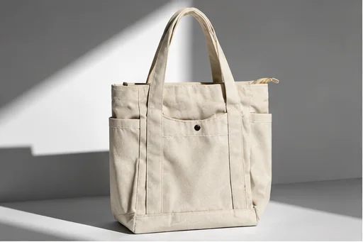
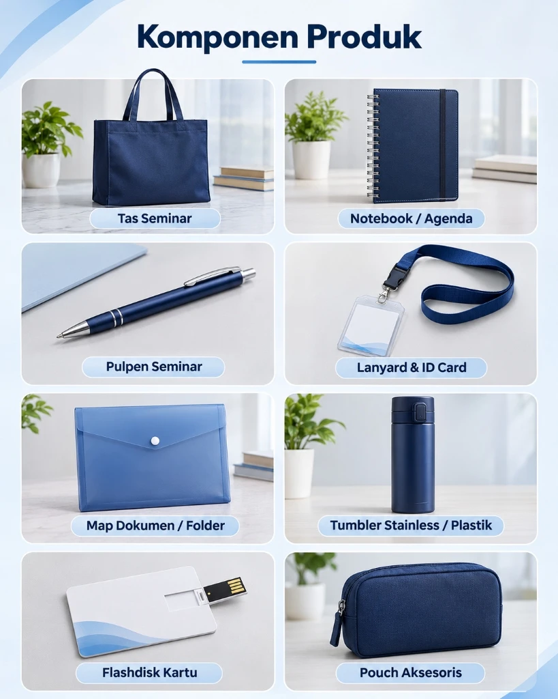

Panduan Tas Seminar Kit: Bahan, Isi, & Tips Memilih
Panduan lengkap memilih bahan, ukuran, kurasi isi paket merchandise, dan estimasi anggaran tas seminar instansi.
Baca Panduan Lengkap →Kumpulan panduan praktis produsen goodie bag Malang: analisis perbandingan bahan tas spunbond vs kanvas, tips pengadaan merchandise perusahaan, dan ide souvenir seminar kit hemat berkualitas.

Panduan lengkap memilih bahan, ukuran, kurasi isi paket merchandise, dan estimasi anggaran tas seminar instansi.
Baca Panduan Lengkap →
Analisis mendalam perbandingan ketahanan beban, gramasi kain, dan kecocokan material untuk kebutuhan berbagai jenis acara.
Baca Ulasan Bahan →
Inspirasi kombinasi isi souvenir fungsional: notebook, pulpen, lanyard, tumbler, hingga merchandise VIP eksklusif.
Lihat Panduan & Rekomendasi Isi →
Langkah terstruktur dari konsultasi brief, approval mockup 2D gratis, penawaran harga resmi (SPH), hingga pengiriman kargo.
Pelajari Cara Pesan →
Solusi konveksi tas seminar kit dan goodie bag custom: kurasi isi fungsional, pemilihan bahan, dan harga fleksibel sesuai budget.
Baca Artikel Lengkap →
Checklist mengevaluasi kualitas sampel fisik, spesifikasi bahan, ketajaman cetak logo, kapasitas produksi, dan transparansi harga.
Baca Artikel Lengkap →
Kupas tuntas kain spunbond, blacu katun, kanvas twill, denim, drill, dan serat daur ulang RPET untuk kebutuhan acara.
Baca Artikel Lengkap →
Langkah terstruktur menghitung kebutuhan peserta, cadangan 2%, kurasi paket isi, pengerjaan 7-14 hari, dan quality control 100%.
Baca Artikel Lengkap →
Langkah terstruktur menentukan ukuran tas, bahan kain spunbond/blacu/kanvas, dan isi souvenir yang cocok untuk seminar dan pameran.
Baca Artikel Lengkap →
Perbandingan mendalam tekstur serat, ketahanan beban, kemampuan cuci, serta estimasi harga goodie bag custom masing-masing bahan.
Baca Artikel Lengkap →
Rekomendasi barang seminar kit fungsional bernilai guna tinggi yang membuat nama acara seminar & brand instansi Anda selalu diingat.
Baca Artikel Lengkap →Tim konsultan Goodiebag Malang siap membantu memilihkan kombinasi tas goodie bag custom dan isi paket yang tepat sasaran & hemat budget.
Konsultasi via WhatsApp: +62 821-3108-7971